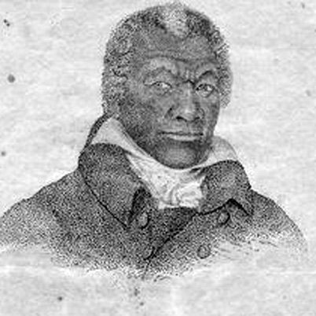

The Great Black Patriots who helped shape America.
For Honor and Glory
February is Black History Month. It is the legacy of historian Carter G. Woodson who was born to former slaves in Virginia in 1875. Early in life, Woodson's story included farm worker, manual laborer, garbage truck driver, and coal miner. After he graduated from college, Woodson taught black youth in West Virginia, served the War Department in the Philippines from 1903 to 1907, and traveled the world, teaching at the Sorbonne in Paris, France. He eventually earned a Master's degree in History, Romance languages, and Literature from the University of Chicago and a doctorate in history from Harvard University...
Read artical at U.S. Army
James Armistead
James Armistead, born into slavery in Virginia circa 1748, secured permission from his master to join the Revolutionary War under General Lafayette. Serving as a spy, Armistead earned the confidence of General Cornwallis and Benedict Arnold, supplying intelligence crucial to American victory at the Battle of Yorktown. He passed away in 1830, having achieved freedom through a successful petition in 1787.
Read more about James biography HERE!